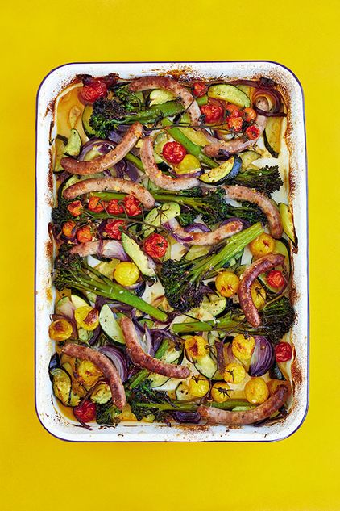

Summer Sausage Traybake

I usually think of sausage bakes as wintery dishes, but they work just as well with fresh courgettes, tomatoes and broccoli for a light, summery dinner.
Serves: 2 adults + 2 children.
Preparation time: 10 minutes.
Cooking time: 30 minutes
Ingredients
- 250g Tenderstem or ordinary broccoli
- 500g courgettes, cut into 5mm slices
- 300g cherry vine tomatoes
- 1 red onion finely sliced
- 1 1/2 tbsp olive oil
- 2 cloves of garlic, crushed
- 2-3 sprigs of fresh rosemary
- 1 tsp sea salt flakes (optional)
- 1 tsp chilli flakes (optional - leave out for children)
- 8-12 free-range chipolata sausages
- 1 lemon, juice only
Method
- Preheat the oven to 230C/210C fan/gas 8.
- Put the broccoli into a large bowl, pour over a kettleful of boiling water, leave
to stand for 1 minute, then drain well. If using ordinary broccoli, skip this step.
- Tip everything into a roasting tin large enough to hold it all in a single layer, and
mix well. Make sure the chipolata sausages are on top, then transfer to the oven and
bake for 30 minutes.
- If your oven heats unevenly, turn the roasting tin after about 20 minutes so the sausages brown evenly.
- Squeeze a little lemon juice and sea salt over the vegetables to taste and serve hot.